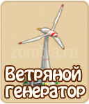

Получено: файл; исходный URL. Первая иллюстрация строки каталога; авторство не подтверждено. Идентичность изображения при замене домена не проверена. Страница: источник.
Ветряной генератор
браузерная версия; платформа и дата редакции не установлены- Тип
- Постройка
- Версия и дата
- браузерная версия; платформа и дата редакции не установлены
Данные по источнику · браузерная версия; платформа не установлена · дата редакции списка не установлена
Предварительно: Прочитан список. Имена файлов пиктограмм приводятся как есть: они не гарантируют идентификацию материала. Alt-атрибуты источника содержат ошибки. Отдельная статья и дата не проверены.. Требуется сверка.
- Сведения из списка, включая имена файлов пиктограмм
- [рисунок: vetrjanoj_generator.png] Доступен с: 57 уровня Стоимость: 1 700 000 монет Даёт опыта: 300 Стадии строительства: 1. 15 [рисунок: Kolonnada.png] + 10 [рисунок: skakalka.png] + 07 [рисунок: z_knopka.png] 2. 07 [рисунок: magnit.png] + 15 [рисунок: kompas.png] + 03 [рисунок: lunniy.png] В Ветряном генераторе можно трансформировать один инвентарь в другой, с помощью Лучей добра: [рисунок: luchi_dobra.png]


Данные по источнику · браузерная социальная версия; сеть не указана · 04.04.2015 — дата фанатской копии
Предварительно: Исторический фанатский источник. Возможна зависимость от других сайтов; дата редакции может отличаться от даты публикации.. Требуется сверка.
- Применение
- Преобразует один вид инвентаря в другой с помощью Лучей добра; количество трансформаций ограничено. Точные рецепты и лимит не указаны.
Данные по источнику · браузерная социальная версия; редакция и возможные изменения неизвестны · 07.05.2015 — дата размещения страницы ZOMBIA, не дата последней правки
Предварительно: Фанатские источники; возможна зависимость между ними. В ZOMBIA alt-тексты ряда иконок недостоверны; ZombiTime не удалось прочитать напрямую.. Требуется сверка.
- Проверка и сравнение
- Отдельная карточка ZOMBIA размещена 07.05.2015, дата последней редакции неизвестна: 57 уровень, 1 700 000 монет, 300 опыта; генератор преобразует инвентарь с помощью Лучей добра. Подписи alt ресурсов ошибочны или отсутствуют, поэтому ингредиенты по одним этим подписям не устанавливаются.
Связанные сущности
нет проверенных связей — требуется сверка.